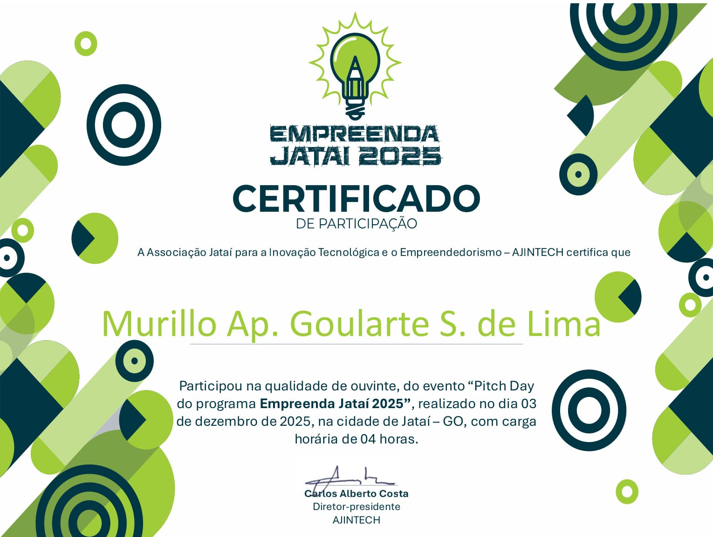
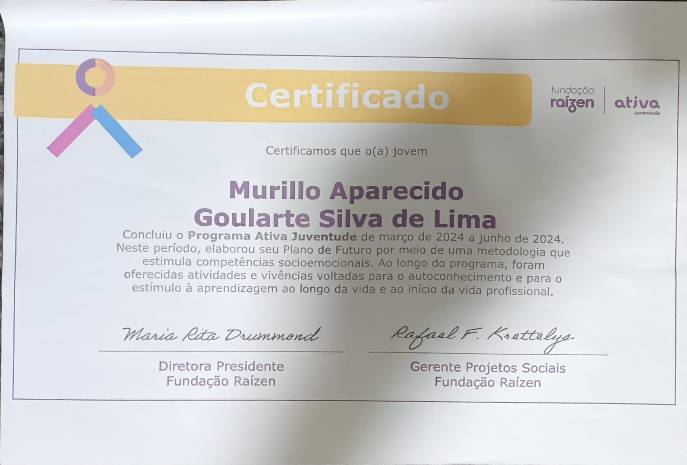
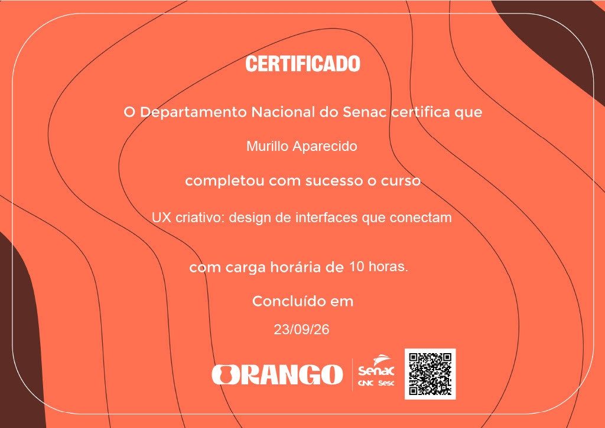

Trabalho em Equipe
Colaboração efetiva em projetos multidisciplinares.

Brasil, GO
Editor de código que uso no dia a dia para desenvolver meus projetos e jogos, com extensões para Git, Live Server e linting.
Sistema de controle de versão que uso para gerenciar o histórico dos meus projetos e trabalhar em equipe sem perder código.
Plataforma onde hospedo e compartilho meus repositórios, incluindo este portfólio e meus projetos de jogos.
Colaboração efetiva em projetos multidisciplinares.

Clareza ao transmitir ideias e feedbacks.

Flexibilidade para se ajustar a novas situações e tecnologias.

Capacidade de guiar e motivar equipes rumo aos objetivos.

Capacidade de se adaptar a desafios e mudanças.

Busca constante por soluções inovadoras.
Clique em um card para trazê-lo para frente

Apresentação de startups • Carga horária de 4h • 2025

Instituição • 2025
Instituição • 2026

Instituição • 2026, Carga horária de 10h